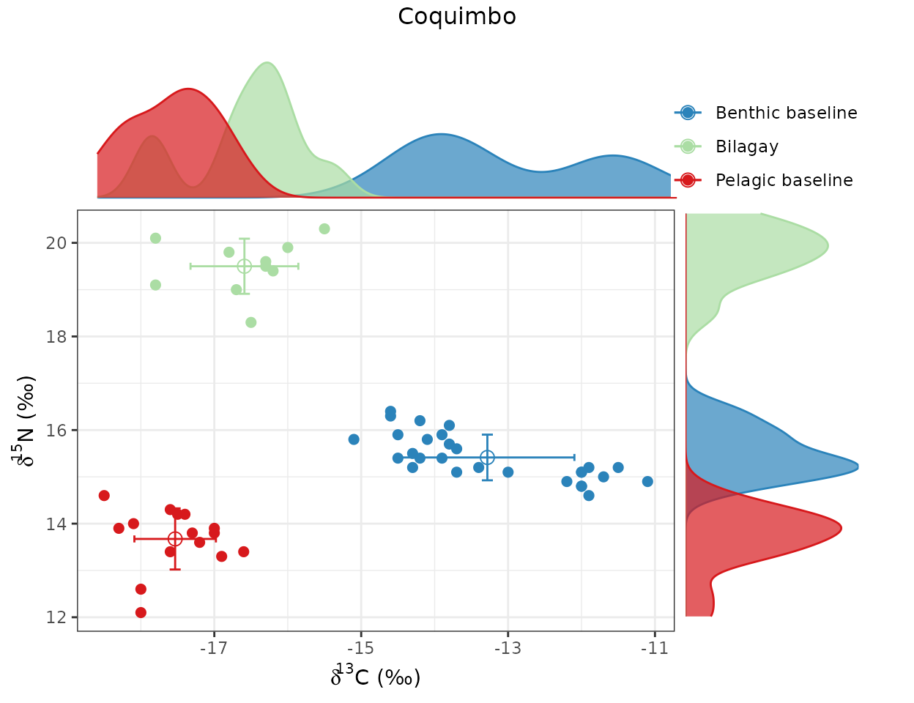
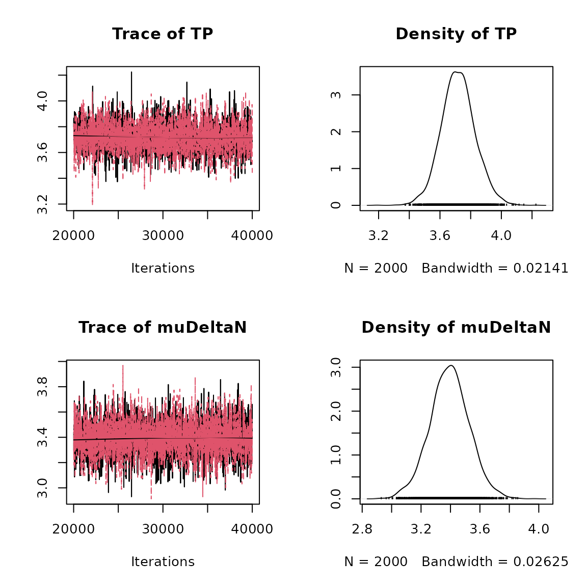
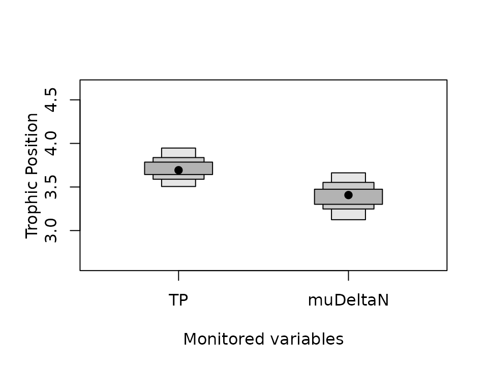

Short guide to the use of tRophicPosition
Claudio Quezada-Romegialli, Andrew L Jackson & Chris Harrod
December 11 2022
Source:vignettes/Short_guide_to_tRophicPosition.Rmd
Short_guide_to_tRophicPosition.RmdtRophicPosition
tRophicPosition, is an R package incorporating a
Bayesian model for the calculation of consumer trophic position using
stable isotopes with one or two baselines. As of 2022-12-11, the current
version of the package is 0.8. tRophicPosition uses the
powerful approach of Markov Chain Monte Carlo simulations provided by JAGS and the statistical
language R. Vignettes can be
browsed with browseVignettes("tRophicPosition").
Introduction
In this vignette, we provide a short guide to the use of
tRophicPosition in its current version (0.8).
Installing and loading the package
Stable version - CRAN
First of all, you need to install JAGS for your platform, and
then install the stable version of tRophicPosition from CRAN:
install.packages("tRophicPosition")After that, you have to load the package with:
Development version - GitHub
If you want to install the development version of
tRophicPosition, you must install it from GitHub. For this,
we use the function install_github() from the package
devtools (installation instructions here),
which needs to be installed previously (either from CRAN or GitHub):
install.packages("devtools")
library(devtools)If you are working in Windows, devtools also requires Rtools, or if
you are working on a Mac, Xcode (from Apple Store).
In Linux you will need to install a compiler and various development
libraries.
Besides installing devtools, you must also install JAGS (Just Another Gibbs
Sampler), which is at the core of the Bayesian model analysis supporting
tRophicPosition.
install_github("clquezada/tRophicPosition", build_vignettes = TRUE)After installing tRophicPosition, it should be loaded
into memory, which automatically reports the version of the software (we
need at least 0.6.8-8 to use the routines described in this
vignette).
## This is tRophicPosition 0.8.0Future releases and how to get support
You are encouraged to use tRophicPosition with your own
data, test the package and see if there are any issues or problems. You
can send your questions or commentaries to the google group tRophicPosition-support
or directly to the email trophicposition-support@googlegroups.com. You can send
your questions to https://stackexchange.com/ https://stackoverflow.com/ or even Facebook (stable
isotope ecology group).
We are constantly working on future releases of
tRophicPosition, so feedback is very much appreciated.
Working with tRophicPosition
Loading data into R
To use tRophicPosition, you need to load data into R.
You can use any function you prefer (e.g. read.csv,
read.table, etc.) to accomplish this. For convenience, we
have included a csv file within the package and we will load it with
read.csv. The dataset Bilagay-MEC.csv includes
C
and
N
stable isotope data for one locality for the bilagay Cheilodactylus
variegatus (http://www.fishbase.se/summary/Cheilodactylus-variegatus.html),
a fish common to the coastal kelp forests of N Chile. It also includes
C
and
N
for two groups of primary consumers: one that provides a long-term
integrated indicator of the pelagic baseline (filter feeding bivalves)
and another for the benthic baseline (grazing gastropods), following
Post (2002).
BilagayMEC <- read.csv(system.file("extdata", "Bilagay-MEC.csv",
package = "tRophicPosition"))In this case we have indicated a system.file function to
locate the file within the package. After loading the file, we need to
extract the stable isotope data and convert it to a format recognized by
the package. If you want to use the package with your own data, you will
need to use a data frame that has a similar structure:
head(BilagayMEC)## Study Location Spp FG d13C d15N NS
## 1 MEC Coquimbo Echinolittorina peruviana Benthic_BL -11.1 14.9 1
## 2 MEC Coquimbo Echinolittorina peruviana Benthic_BL -11.9 15.2 1
## 3 MEC Coquimbo Echinolittorina peruviana Benthic_BL -11.7 15.0 1
## 4 MEC Coquimbo Echinolittorina peruviana Benthic_BL -11.5 15.2 1
## 5 MEC Coquimbo Prisogaster niger Benthic_BL -14.6 16.3 1
## 6 MEC Coquimbo Prisogaster niger Benthic_BL -13.8 15.7 1Here FG stands for functional group, and NS refers to an integer
representing the north to south ordering of locations. To extract the
stable isotope data from the data frame above we will use a function we
have provided in the package called loadIsotopeData(). By
default, this function extracts
C
and
N
stable isotope values from the columns d13C and
d15N, grouping observations by a consumer, one or two
baselines and a group identifier (here community, but can be location,
time etc):
consumer <- loadIsotopeData(BilagayMEC, consumer = "Bilagay", consumersColumn = "FG",
b1 = "Pelagic_BL", b2 = "Benthic_BL",
baselineColumn = "FG",
group = "Coquimbo", groupsColumn = "Location")In the case above we have indicated that all observations that
coincide with “Pelagic_BL” in the column “FG” will be extracted as
baseline1, and all observations that coincide with “Benthic_BL” in the
same column will be extracted as baseline2. And also, all observations
that coincide with “Bilagay” in the column “FG” and coincide with
“Coquimbo” in the column “location” will be extracted as consumer
values. Other options are available, and they can be found with
help(loadIsotopeData).
An essential component of the model to estimate trophic position is
the trophic discrimination factor (TDF). By default the function
loadIsotopeData() returns
N
(3.4
0.98 sd) and
C
(0.39
1.3 sd) based on Post’s (2002) assumptions. But you can change this
assumption to use any values, simply adding them as arguments within the
call to this function. For example, to get McCutchan’s et al (2003)
values on TDF, instead of Post’s (2002) assumptions we could write the
following:
# First we get TDF values from the internal database using McCutchan's et al
# (2003) paper
TDF_values <- TDF(author = "McCutchan", element = "both", type = "muscle")## You selected McCutchan's et al (2003)
## Muscle tissue d15N: 15 values with mean 2.9 +- 0.32 se## Muscle tissue d13C: 18 values with mean 1.3 +- 0.3 se
# Then we use those values within the call to loadIsotopeData()
consumer_with_McCutchan <- loadIsotopeData(BilagayMEC,
consumer = "Bilagay",
b1 = "Pelagic_BL",
b2 = "Benthic_BL",
group = "Coquimbo",
consumersColumn = "FG",
baselineColumn = "FG",
groupsColumn = "Location",
deltaN = TDF_values$deltaN,
deltaC = TDF_values$deltaC)Instead of using mean values
sd, one possibility of including the uncertainty of TDF is using the raw
data. So you can use a list of values given your knowledge of your
consumer or a colleague’s information,
e.g. deltaN = c(2, 2.1, 1.9, 2.01, 2.2) and/or
deltaC = c(0.3, 0.31, 0.4, 0.32).
##Plot the data
At this point we have a consumer object (stable isotope
values of bilagay), pelagic and benthic baselines (in this case,
C
and
N
values of filter feeding [pelagic indicator] and grazing [benthic
indicator] primary consumer molluscs) plus TDF assumptions based on Post
(2002). We have to plot the data to check that everything is fine:
# Here we explicitly include a label for both baseline 1 and baseline 2.
# We could change the label for the consumer (consumer = "new_label"), or even
# change the position of the legend (legend = c(1.15, 1.15) is the default).
plot(consumer, b1 = "Pelagic baseline", b2 = "Benthic baseline")
Here we see that the data for our fish bilagay lay between both C baselines, and are N-enriched relative to the baselines (which also apparently differ in N values).
We have several options for estimating bilagay trophic position. We can calculate a single baseline Bayesian trophic position model which only includes a TDF for nitrogen, or we can include both baselines (which seeing they have different N values, seems reasonable), and we can include fractionation for both nitrogen and carbon. This is what we will do – first estimate TP using a single baseline, and then we will calculate the full model, including both baselines and a TDF for both nitrogen and carbon.
The Bayesian Model
We have coded three Bayesian models into tRophicPosition: one
baseline (jagsOneBaseline()), two baselines, without TDF
for carbon (jagsTwoBaselines()) and two baseline full
model, that includes a TDF for carbon
(jagsTwoBaselinesFull()). The model can be defined using
either of the functions mentioned, or using the new function
jagsBayesianModel(), first introduced in the release 0.6.8
of tRophicPosition.
To make full use of the Bayesian approach coded in
tRophicPosition, the user can change the priors for any of
the parameters of the different models, or the constants (e.g. lambda).
Here we will define an one baseline model:
model.string <- jagsBayesianModel(model = "oneBaseline", TP = "dnorm(4, 0.1)")The function jagsBayesianModel() receives as arguments
the model variable (with three options: “oneBaseline”,
“twoBaselines” or “twoBaselinesFull”), and optionally receives any
distribution for the parameters. If no argument is received, then by
default this function returns the two baselines full model. In the
example above we have defined also a normal distribution with a mean of
4 and SD of 0.1 as priors for the parameter TP, which is trophic
position. Here we are pretty confident (given the stomach contents) that
our fish has a TP = 4. All of the functions that define a Bayesian
model, by default return lambda = 2 to indicate the trophic
level of the baseline, which in this case is the bivalve Perumytilus
purpuratus (pelagic baseline). If you want to change it, simply add
this argument within the call to jagsBayesianModel() or any
of the other functions.
The next step is to initialize the model, using the function
TPmodel(). The only two arguments needed are
data and model.string, where the first is the
stable isotope data and the second is the Bayesian model we just defined
above. The other arguments are optional.
model <- TPmodel(data = consumer, model.string = model.string,
n.adapt = 20000, n.chains = 2)## Warning in rjags::jags.model(con, data = data, n.chains = n.chains, n.adapt =
## n.adapt, : Unused variable "dCb1" in data## Warning in rjags::jags.model(con, data = data, n.chains = n.chains, n.adapt =
## n.adapt, : Unused variable "dNb2" in data## Warning in rjags::jags.model(con, data = data, n.chains = n.chains, n.adapt =
## n.adapt, : Unused variable "dCb2" in data## Warning in rjags::jags.model(con, data = data, n.chains = n.chains, n.adapt =
## n.adapt, : Unused variable "deltaC" in data## Warning in rjags::jags.model(con, data = data, n.chains = n.chains, n.adapt =
## n.adapt, : Unused variable "dCc" in data## Compiling model graph
## Resolving undeclared variables
## Allocating nodes
## Graph information:
## Observed stochastic nodes: 81
## Unobserved stochastic nodes: 16
## Total graph size: 110
##
## Initializing modelThe initializating phase is needed because samplers adapt their
parameters to maximize their efficiency. After the initialization it
takes place the actual Markov Chain Monte Carlo sampling, which is done
with the function posteriorTP().
posterior.samples <- posteriorTP(model = model, n.iter = 20000,
variable.names = c("TP", "muDeltaN"))In the example above we set 20,000 MCMC iterations to sample the
posterior using the model defined with TPmodel(). Also we
defined to monitor the variables "TP" and
"muDeltaN" (which is the default). TP is trophic position,
our main parameter of interest, but also we included muDeltaN which is
the mean for
N.
Analyzing and plotting the posterior estimation of trophic position
If everything went well, then we have calculated trophic position
with Bayesian inference. The function posteriorTP() returns
an object of the class “mcmc.list”, so we can use the generic method
summary from the coda package:
summary(posterior.samples)##
## Iterations = 20010:40000
## Thinning interval = 10
## Number of chains = 2
## Sample size per chain = 2000
##
## 1. Empirical mean and standard deviation for each variable,
## plus standard error of the mean:
##
## Mean SD Naive SE Time-series SE
## TP 3.720 0.1108 0.001751 0.001826
## muDeltaN 3.393 0.1343 0.002123 0.002085
##
## 2. Quantiles for each variable:
##
## 2.5% 25% 50% 75% 97.5%
## TP 3.505 3.647 3.718 3.789 3.946
## muDeltaN 3.124 3.306 3.394 3.481 3.661The coda package provided useful summary statistics, but some
researchers feel that best practice when describing central tendency of
posterior distributions is to use the mode. We will use the function
getPosteriorMode() to estimate this:
# First we combine both chains (if we sample them)
posterior.combined <- coda::mcmc(do.call(rbind, posterior.samples))
# Then we calculate the mode with this code
getPosteriorMode(posterior.combined)## TP muDeltaN
## 3.68 3.44In order to graphically depict our results we can use the generic
plot function from coda package (plot(posterior.samples)),
or even use other R packages to process/display the information in the
posterior samples, such as MCMCtrace() and
MCMCplot() functions from the package MCMCvis.
plot(posterior.samples)
The plot above (plot(posterior.samples)) visualizes the
trace and density of MCMC chains for our parameters of interest, in this
case TP (trophic position) and muDeltaN (mean of TDF for nitrogen). It
gives us a quick way to visualize if posterior sampling has converged:
there should be no tendency of increase or decrease over time (both
chains in trace plot are well mixed) and the density for both parameters
should be smooth and unimodal (given the assumptions of the one baseline
Bayesian model in this particular case).
The plot below (plotTP(), a wrapper from SIBER)
visualizes the posterior distributions of both TP and muDeltaN. It gives
a graphical summary of the mode and 95, 75 and 50 percent credible
intervals for each posterior distribution (see
?SIBER::siberDensityPlot for details).
# First we combine the 2 chains
combined <- as.data.frame(coda::mcmc(do.call(rbind, posterior.samples)))
# Then we plot the data using a wrapper of SIBER::siberDensityPlot()
plotTP(combined, xlab = "Monitored variables")
When we are dealing with more than one species, or more than one
Bayesian model (for one species) we will use the function
credibilityIntervals(). This is covered in the rest of
vignettes.
Further use of tRophicPosition
Our aim in building this package was to make it as useful as
possible. As such, we have coded a number of more complex (but
informative) functions for users who want to take full advantage of
tRophicPosition. These functions includes multiple models
that compare different means of calculating TP
(multiModelTP()), automatic comparisons between multiple
species e.g. for community based comparisons, or comparisons for single
species across multiple locations (multiSpeciesTP()),
pairwise comparison between two (compareTwoDistributions())
or multiple posterior estimations (pairwiseComparisons()),
non-Bayesian version of trophic position (parametricTP()),
parsing multiple species or communities from a data frame
(loadIsotopeData() and extractIsotopeData()),
or screening food webs for more than one species
(screenFoodWeb()). These functions are described in a
number of other vignettes included within the package. To access them
with, simply use the following code:
browseVignettes("tRophicPosition")